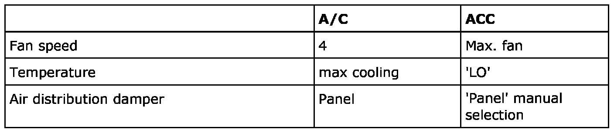

A/C System Performance Test
A/C System Performance Test
A performance test answers whether the A/C system is producing sufficient cooling.
Conditions
The following conditions must be satisfied:
- Door, windows and the bonnet must be closed.
- All dashboard vents should be open.
- The engine speed should be 1500-2000 r/min
- The ambient temperature should be 20-25 degrees C.

Inspection
Measure the temperature 50 mm inside the centre dashboard vent. Read the temperature after 5 minutes.
The read temperature should be under 7 degrees C.